Assemble the basic optics module
Tools
- 1 1.5mm Ball-end Allen key
- 1 Pi Camera lens tool - This should come with the Raspberry Pi Camera Module. If it is missing, you can 3D print a workaround lens remover.
Electronic Components
Mechanical Components
Printed Parts
The imaging optics for this workstation version consist of the Raspberry Pi camera and the lens from the camera. To create a microscope, the lens is separated from the camera. This makes quite a good microscope objective with a field of view about 950μm across.
Step 1: Visually inspect the lens spacer
Take the lens spacer and confirm that:
- It has been printed in black.
- It is dust free (You can blow air through to clean it)
- The central shaft is not obstructed by strings of plastic.
Step 2: Remove Pi Camera Lens
Caution!
The camera board is static sensitive.
- Before touching the Pi Camera, touch a metal-earthed object. If you own one, consider wearing an anti-static strap.
- Take the Pi Camera out of the package. Make sure to hold it only by the sides of the board.
- Take the protective film off the lens.
- Take the Pi Camera lens tool and place it over the lens
- Slowly unscrew the lens (About 4 full turns of the tool)
- Carefully lift off the lens.
- Save the lens and the camera. We use both this version of the microscope.

 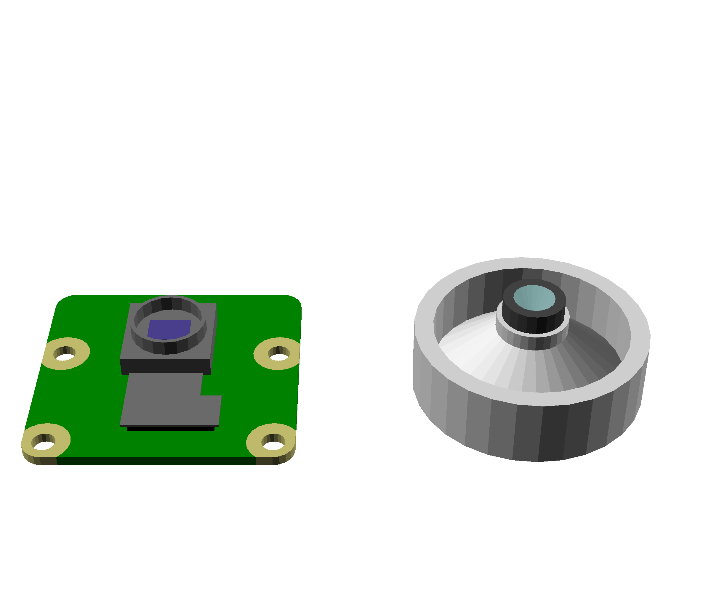
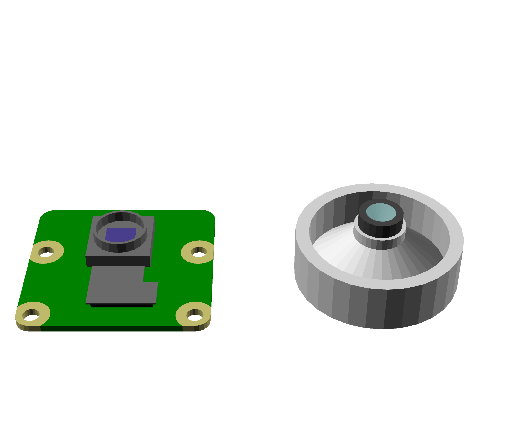
Step 3: Push-fit the lens
- Place the Pi camera lens on a clean surface with the side opposite the camera sensor on the bottom.
- Push the lens spacer down onto the lens until it clicks into place.
 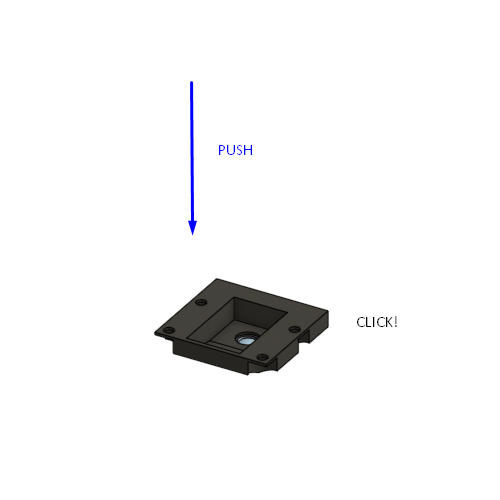
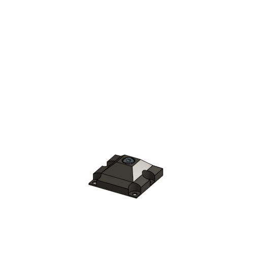
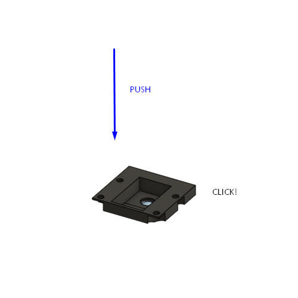
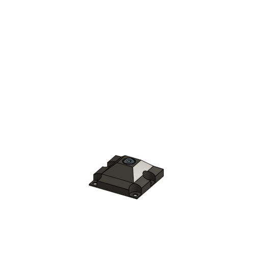
Step 4: Attach the Pi Camera
- Take the Pi Camera and place it on top of the pi camera platform.
- Place the lens spacer over the camera
- Use four M2x5mm cap head screws to secure the three parts together using a 1.5mm Ball-end Allen key
- Take care not to torque the screws.
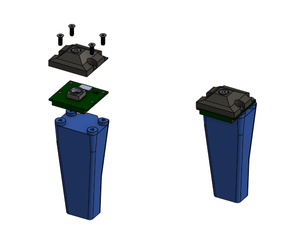
Step 5: Attach the mounting screw
- Take an M3 nut and push it into the nut trap from the top
- Take an M3x10mm cap head screw and screw it into the nut.
- Only screw it in a couple of turns. About 5 mm of thread should still be visible

 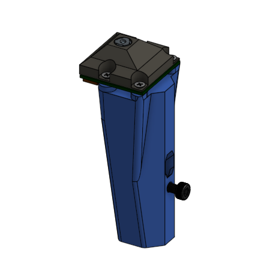
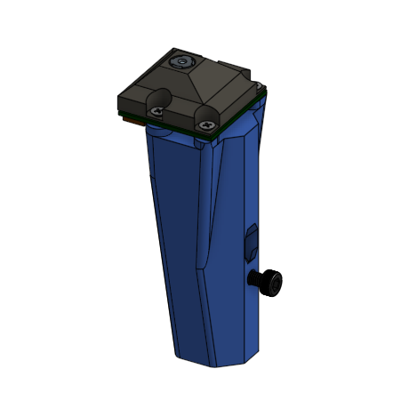
Step 6: Connect ribbon cable
- Take the Pi Camera ribbon cable
- Pull the catch forward on the exposed Pi Camera connector
- Insert the ribbon cable with the contacts towards the board
- Close the catch on the connector
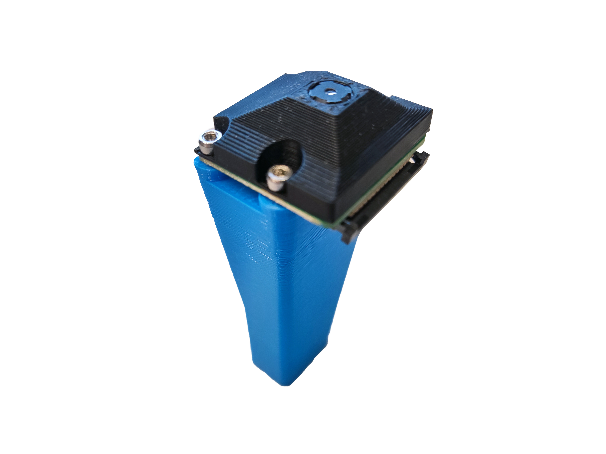
 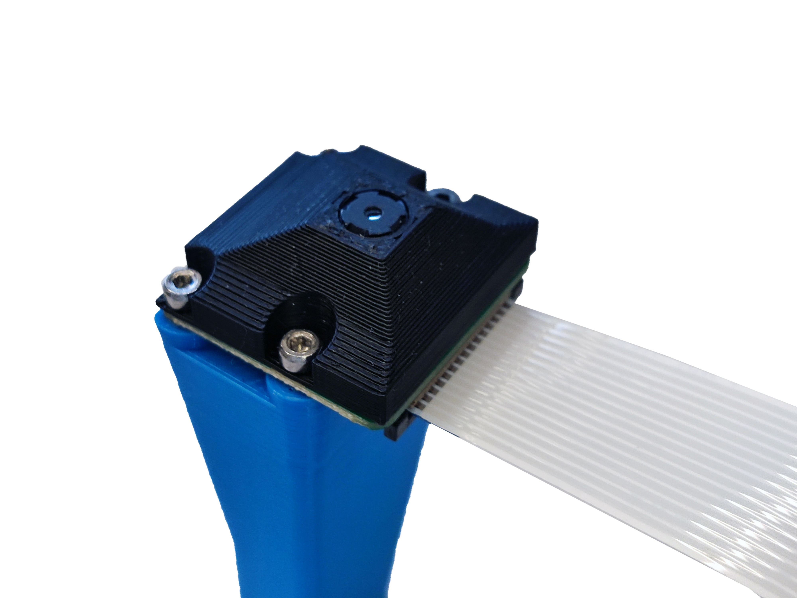
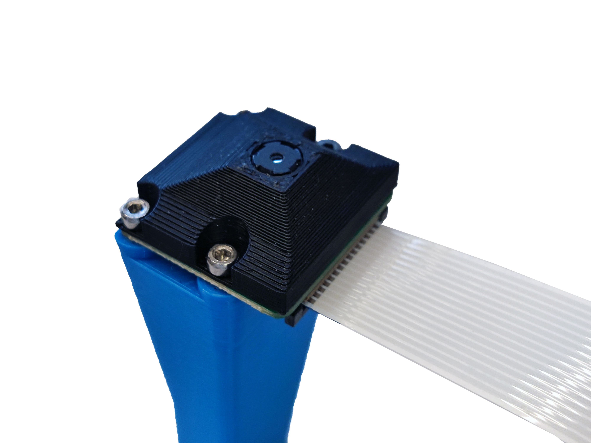
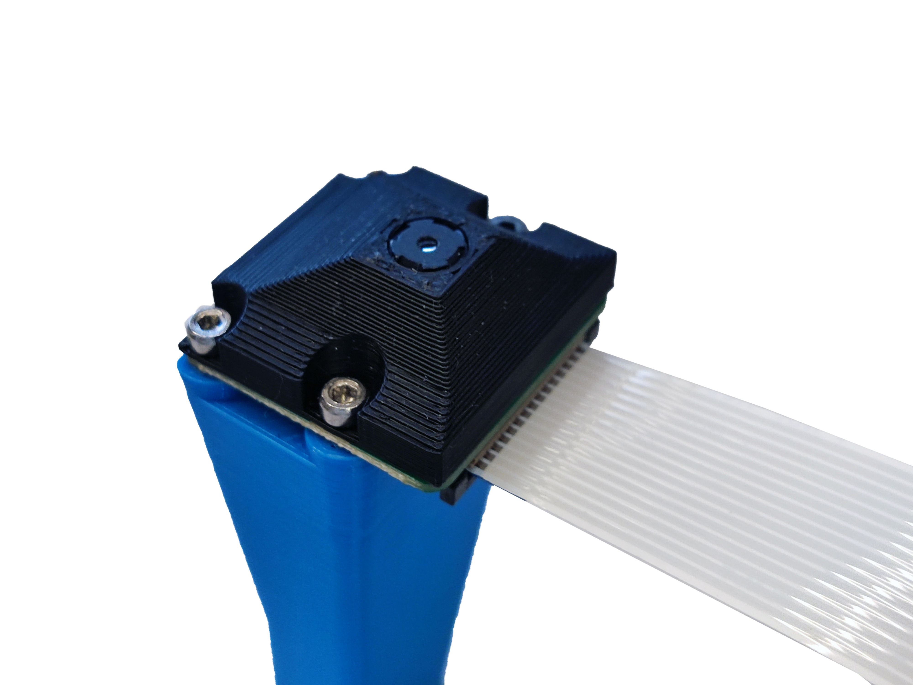
Set the complete optics module aside in a safe place.